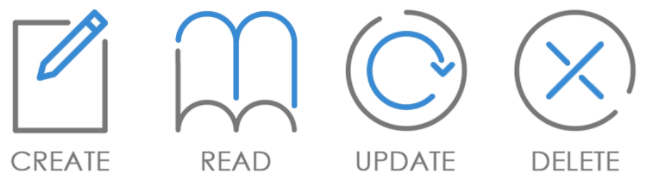

Начало
Тестване
Отдел
Контакти
Автоматизация
Упражнения
CRUD интерфейс:
C- Create/ създаване
R- Read/ четене
U- Update/ актуализиране
D- Delete/ изтриване
Информация:
В компютърното програмиране създаване, четене, актуализиране и изтриване (CRUD) са четирите
основни операции на постоянното съхранение. CRUD също понякога се използва за описание на конвенции
за потребителския интерфейс, които улесняват прегледа, търсенето и промяната на информация с помощта
на компютърно базирани формуляри и отчети. Терминът вероятно е популяризиран за първи път от Джеймс Мартин в неговата книга от 1983 г. "Управление на средата на базата данни".
CRUD интерфейс в RhinoCMS:
В Rhino CMS този вид интерфейс намира голямо приложение в модули cms-floor, Cashdesk2, Kiosk, Jp Server,
в които се съдържат множество интерфейси, в които може да се открие всяка една функция на CRUD интерфейсите.
Примери за CRUD в система RhinoCMS:
1. Create- създаване: това ще са всички интерфейси, в които се правят настройки за например нова машина на централен сървър и създаване на нови промоции.
2. Read- четене- това ще са всички интерфейси, от които може да се прочете даден вид информация.
В интерфейсите на RhinoCMS това ще са одит съобщения и справки.
3.Update- актуализиране/ъпдейтване- интерфейс от този тип притежава свойството да прави промени при вече
съхранени настройки. Пример за такъв интерфейс в системата са интерфейсите за промяна на конфигурации на
машини или джакпот.
4. Delete- изтриване- тази функционалност ще изтрие или премахне даден запис от например таблица или премахване изцяло на дадена конфугирация. Пример за Delete в RhinoCMS ще бъдат интерфейси, в които може
и се прави изтриване на данни: корекция на видове точки, кредити, имена на клиенти или направени преди време настройки в конфигурации на игрални машини.
